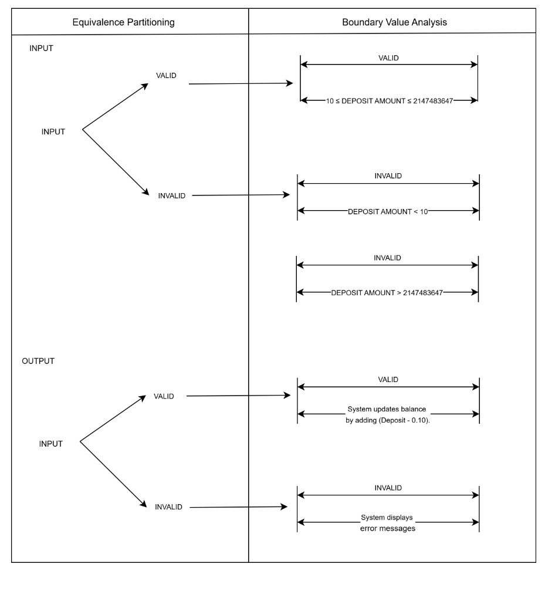
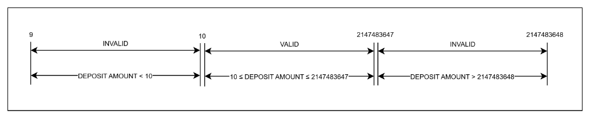
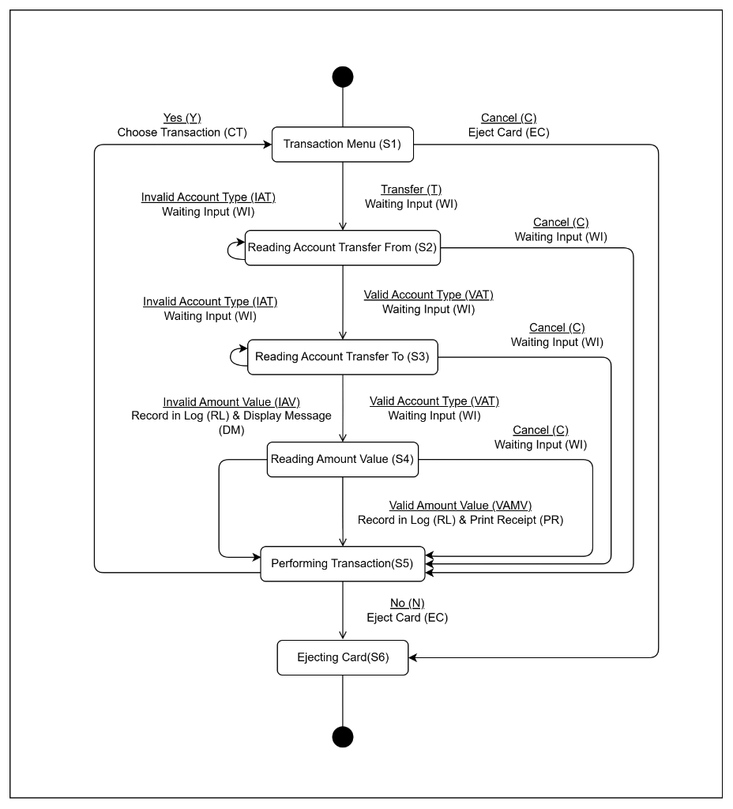

ATMS Testing Process: F006 Cash Deposit / F007 Transfer
Professional Role & Responsibility
In this assignment, I was in charge of playing different roles for each process. Each role required different
responsibilities and perspectives to implement the software testing process. :
Test Analyst: I was responsible for the strategic analysis of system logic using four
core black-box testing methodologies: Equivalence Partitioning (EP), Boundary Value Analysis (BVA), State
Transition Testing, and Use Case Testing.
Tester: My role involved the critical analysis of existing test cases to ensure full
coverage, followed by the formalization of detailed Test Procedures (TP) for repeatable system validation.
Feature Specification & Purpose
The scope of this validation focuses on Feature F006 (Deposit) and Feature F007 (Transfer). The primary
objective is to allow users to perform secure transaction into selected accounts, ensuring that every cash
transaction adheres strictly to
established business rules and system integrity standards.
Risk Assessment
I identified Feature F006 as a High-Risk component. This is because it changes account
balances based on physical cash input.
I identified the F007 Transfer Feature as High-Risk because it involves the
simultaneous modification of two separate account balances, which increases the chance of financial
discrepancies.
Checking Range
The testing lifecycle was managed and documented in strict accordance with the IEEE 829-2008 Standard for
Software and System Test Documentation. This ensures a traceable framework consisting of:
Test Design Specifications: Outlining logical partitions and system behaviors.
Test Identification: Mapping analyzed Test Conditions (TCON) to Coverage IDs (TCOV).
Test Procedures: Defining specific setup, execution, and wrap-up steps (e.g., TP-06-001)
for formal validation.
Checking Range (EP & BVA)
2.1 Equivalence Partitioning (EP)

In the optimization of the test suite, I categorized the infinite range of possible deposit amounts into
three logical Equivalence Partitions. This allowed me to achieve maximum coverage with a minimal number of
test cases:
EP1 (Invalid Low): Amounts < 10. Rationale: This ensures the system rejects deposits below the bank's minimum threshold.
EP2 (Valid Range): 10 to 2,147,483,647. Rationale: This represents the 'Safe Zone' for successful transactions.
EP3 (Invalid High): Deposit Amounts > 2,147,483,647. Rationale: This protects the database from 'Integer Overflow' errors by rejecting amounts that
exceed system capacity.

Critical Edge Testing (BVA)
Since software defects are most common at the "edges" of rules, I performed a 2-point Boundary Value
Analysis. I specifically targeted the exact transition points where the system’s logic must change:
Lower Bound: I verified 9 (Rejection) and 10 (Acceptance) to confirm the minimum limit
is strictly enforced.
Upper Bound: I verified 2,147,483,647 (Acceptance) and 2,147,483,648 (Rejection) to
ensure the system handles its maximum numerical limit without crashing.
Verification of Financial Rule ii
Beyond simple boundaries, I verified the Processing Fee Logic using the following integrity formula:
NEW BALANCE = OLD BALANCE + (DEPOSIT AMOUNT - 0.10)
Ensures the 0.10 fee is correctly applied to every successful deposit.
100%
3.0 Logic Analysis: The Decision Table
Business Rules & Hierarchy
I utilized a Decision Table to analyze the business rules by mapping combinations of Inputs (Conditions) to
their resulting Outputs (Actions). I used this method to act as a Logic Gatekeeper, ensuring that every possible
user scenario—both valid and invalid—is accounted for in the test design.
Example: F006 Deposit Decision Table
The following table maps the logical conditions to their specific system actions for F006 Cash Deposit
Condition
TCOV-06-010
TCOV-06-011
TCOV-06-012
TCOV-06-013
Valid Account Type
N
Y
N
Y
Valid Deposit Amount
-
N
Y
Y
ACTION
Update Account Balance
X
Deduct Processing Fee
X
Display Error Message
X
X
X
Analytical Deep-Dive
By mapping these rules, I can confirmed that the system correctly prioritizes security and data integrity:
The Gatekeeper Logic: Rules TCOV-06-010 and TCOV-06-012 show that if an account is invalid (N), the system triggers an error
regardless of whether the deposit amount is valid.
The Success Path: Rule TCOV-06-013 (The Success
Path): Only when both conditions are 'Yes' (Y) does the system execute the dual-action of updating the balance
and deducting the 0.10 fee.
Alternative Flows: I also mapped out the Use Case, including handling scenarios where a
user selects an "Invalid Account" or presses the "Cancel" button.
Behavioral Analysis: F007 Transfer
Behavioral Logic Analysis
I also performed a deep-dive analysis of the system’s dynamic behavior using State Transition Testing. This
ensures the ATM never enters an undefined state or a 'frozen' condition, maintaining system stability during
complex financial moves.

Transfer State Transition Diagram
1. Finite State Mapping (S1 - S6)
I analyzed the feature by breaking the user journey into six discrete Finite States to ensure the system is
always in a controlled condition:
🔹 State S1 to S4: I verified the data collection phase,
ensuring the system captures the "From" account, "To" account, and "Amount" in a strict sequence.
🔹 State S5 (Performing Transaction): I analyzed this as
the critical "Decision State" where the actual financial update occurs.
🔹 State S6 (Ejecting Card): I verified this as the Terminal State, ensuring the
session is completely closed to protect user security.
2. Resilience through Self-Loops
A key part of my analysis was testing the system's reaction to Invalid Account Types (IAT)
in states S2 and S3.
Deep Insight: I confirmed the presence of Self-Loops where the system remains in
the current state if an error occurs.
Action WI (Waiting Input): This ensures that the ATM does not advance to the next state or
crash; instead, it provides the user with an opportunity to correct their input, maintaining a "Zero-Defect"
flow.
3. Deadlock Prevention (The Cancel Path)
I specifically analyzed the Cancel (C) event across all input states (S2, S3, S4).
Safety Override: My analysis verified that the system provides a consistent exit path
to S5 (Performing Transaction) with a Waiting Input (WT) action.
Justification: This prevents "System Deadlocks" where a user might feel trapped in a
sub-menu. It ensures that the card can be reclaimed safely at almost any stage of the process.
4. Logical Traceability
To guarantee 100% test coverage, I mapped every transition arrow in the diagram to a specific Test Coverage
ID (TCOV-07-037 to TCOV-07-049). This allows for full auditability,
proving that the test suite accounts for every possible "Happy Path" and "Negative Path" in the behavioral
logic.
Transfer State Transition Table
This grid maps the system states against user inputs to ensure the logical coverage.
This portfolio demonstrates my deep understanding of the tester role and my ability to apply diverse
methodologies to secure a reliable user experience within the ATMS business scenario. This project gave me
hands-on experience in software quality assurance. By taking on this role, I developed the critical thinking
needed to identify vulnerabilities and ensure a reliable, user-friendly experience for ATM customers.